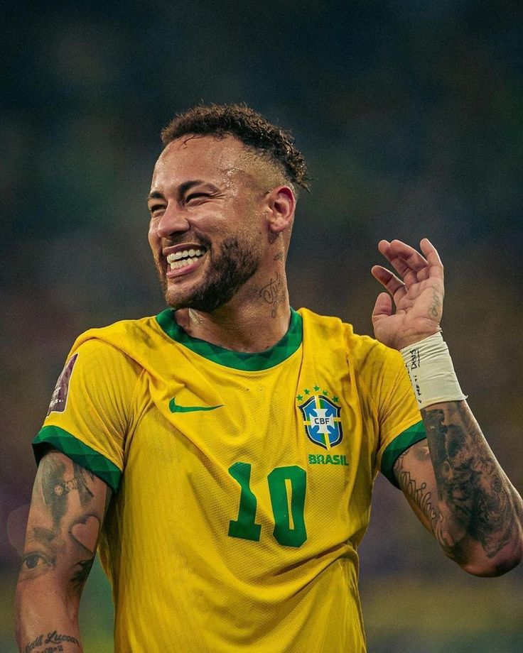
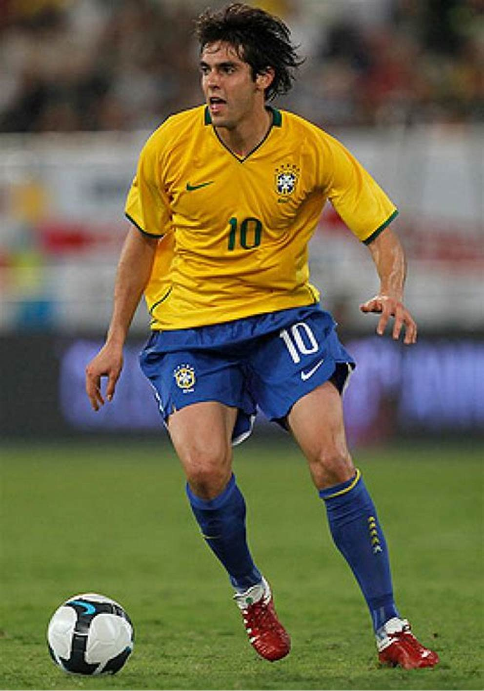
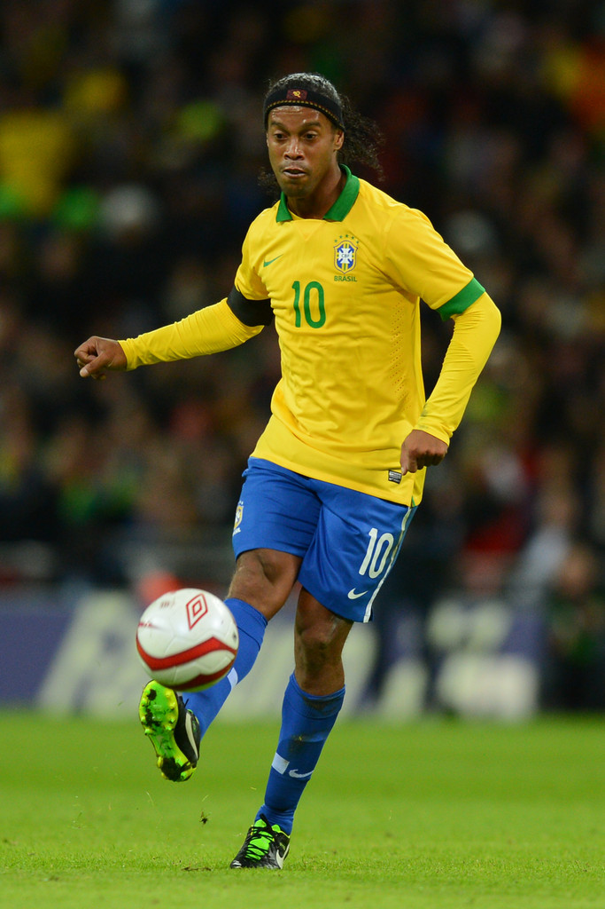

Melhores Jogadores

.jpg)

.jpg)
.jpg)

Selecão 2002
Nostalgia Brazuca
O Brasil conquistou o pentacampeonato na Copa do Mundo de 2002, realizada na Coreia do Sul e no Japão, com uma campanha impecável: 7 vitórias em 7 jogos. Liderada por Luiz Felipe Scolari, a equipe contou com estrelas como Ronaldo, Rivaldo, Ronaldinho Gaúcho e o capitão Cafu. Na final, o Brasil venceu a Alemanha por 2 a 0, com dois gols de Ronaldo, que se consagrou artilheiro do torneio com 8 gols. Essa conquista consolidou o Brasil como a maior potência do futebol mundial, sendo a única seleção a vencer cinco Copas do Mundo.
Ronaldo, o Fenômeno, foi o grande destaque da Copa do Mundo de 2002, consagrando-se artilheiro do torneio com 8 gols. Após superar uma grave lesão no joelho, ele retornou em grande estilo, mostrando sua habilidade, força e precisão. Ronaldo marcou gols decisivos, incluindo os dois na final contra a Alemanha, garantindo o pentacampeonato para o Brasil. Sua atuação na Copa de 2002 não apenas selou sua redenção no futebol, mas também o consolidou como um dos maiores jogadores da história.
A Seleção Brasileira de 2002 é considerada por muitos uma das melhores da história. Sob o comando de Luiz Felipe Scolari, o time apresentou talento, equilíbrio e união, com destaques como Ronaldo, Rivaldo, Ronaldinho Gaúcho e o capitão Cafu. Invicta, a equipe venceu todos os 7 jogos, incluindo a final contra a Alemanha (2 a 0). Com um ataque poderoso, defesa sólida e estrelas no auge, essa seleção marcou época ao conquistar o pentacampeonato e consolidar o Brasil como a maior potência do futebol mundial.
O Brasil é a única seleção pentacampeã da história da Copa do Mundo, com títulos conquistados em 1958, 1962, 1970, 1994 e 2002. Essa hegemonia reflete a excelência e o talento do futebol brasileiro ao longo das décadas, com gerações de craques que encantaram o mundo, como Pelé, Romário, Ronaldo e muitos outros. O pentacampeonato, alcançado na Copa de 2002, consolidou o Brasil como a maior potência do futebol mundial, sendo a única seleção a participar de todas as edições do torneio desde 1930.